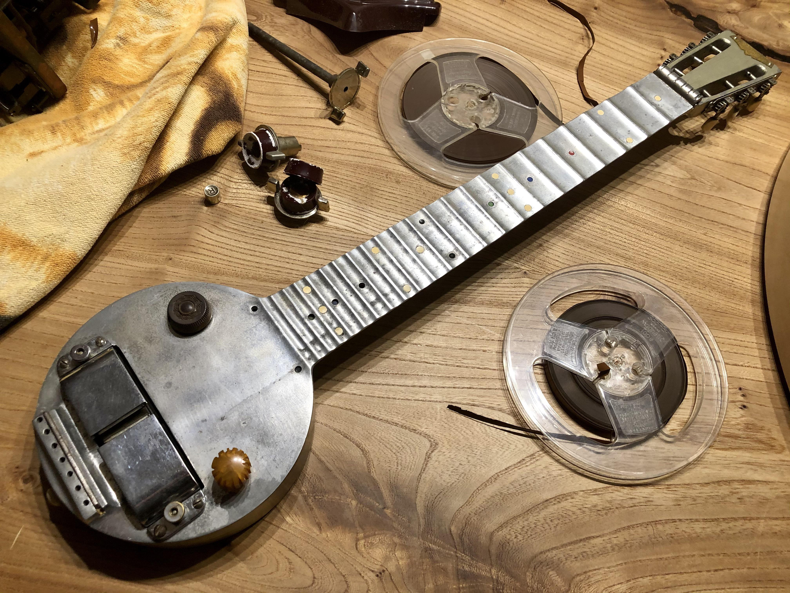
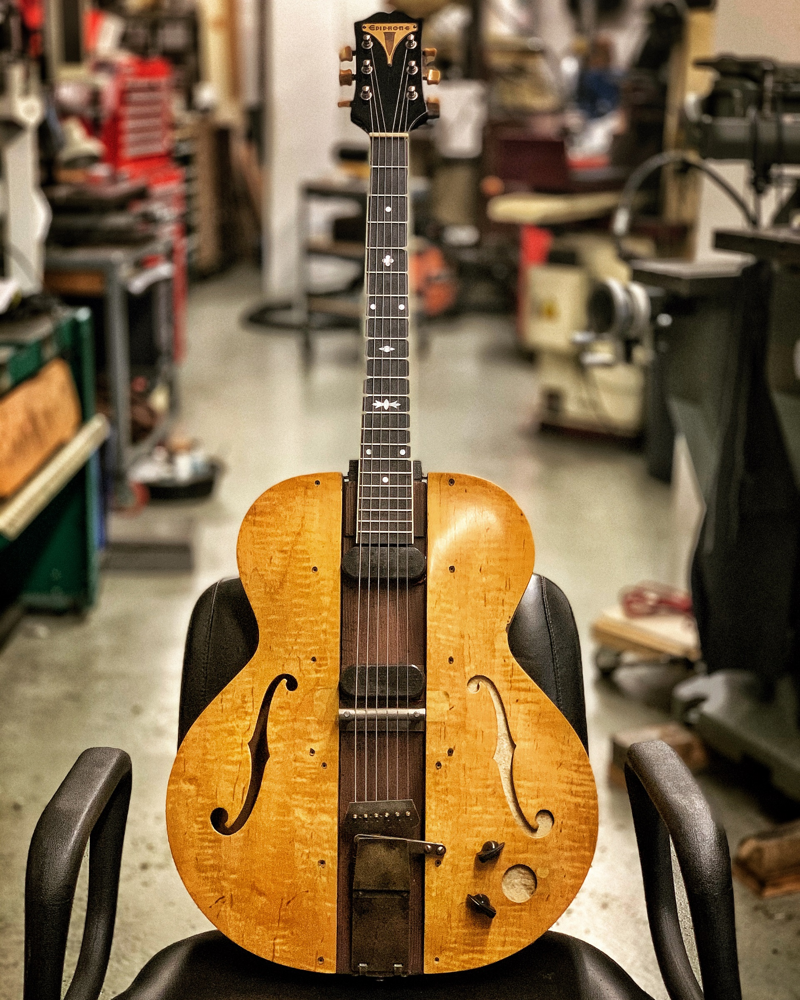
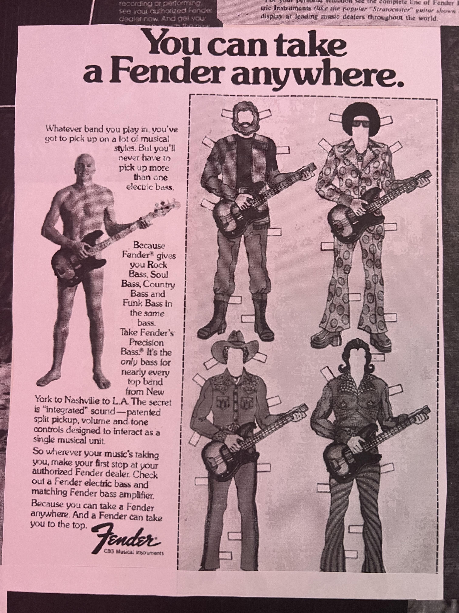
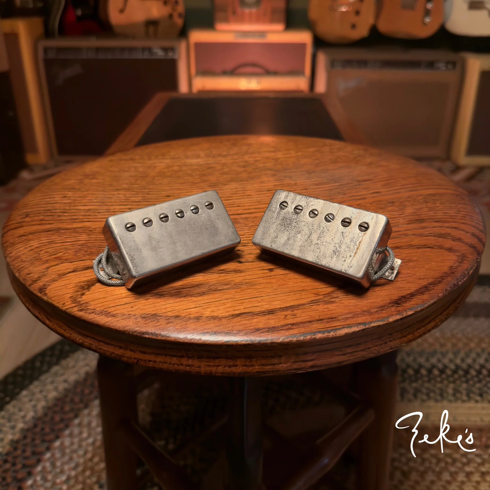
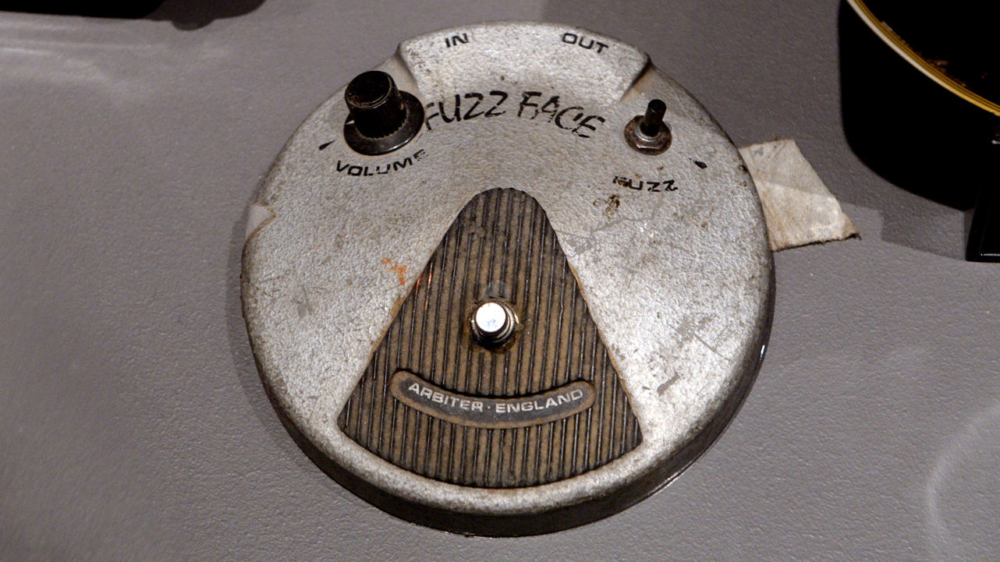
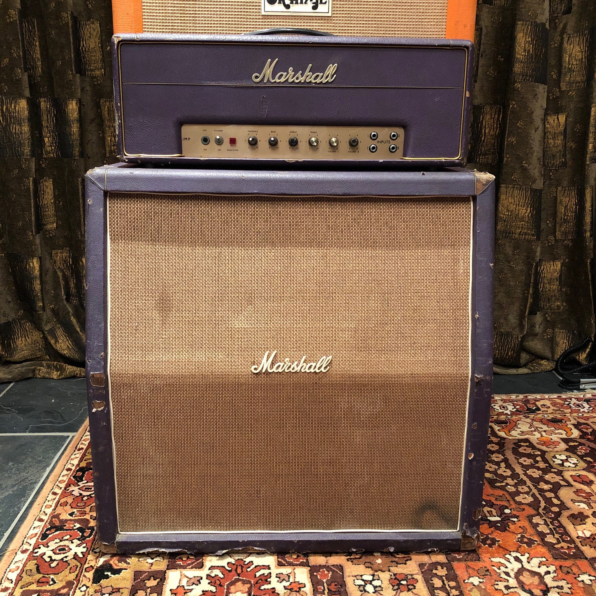
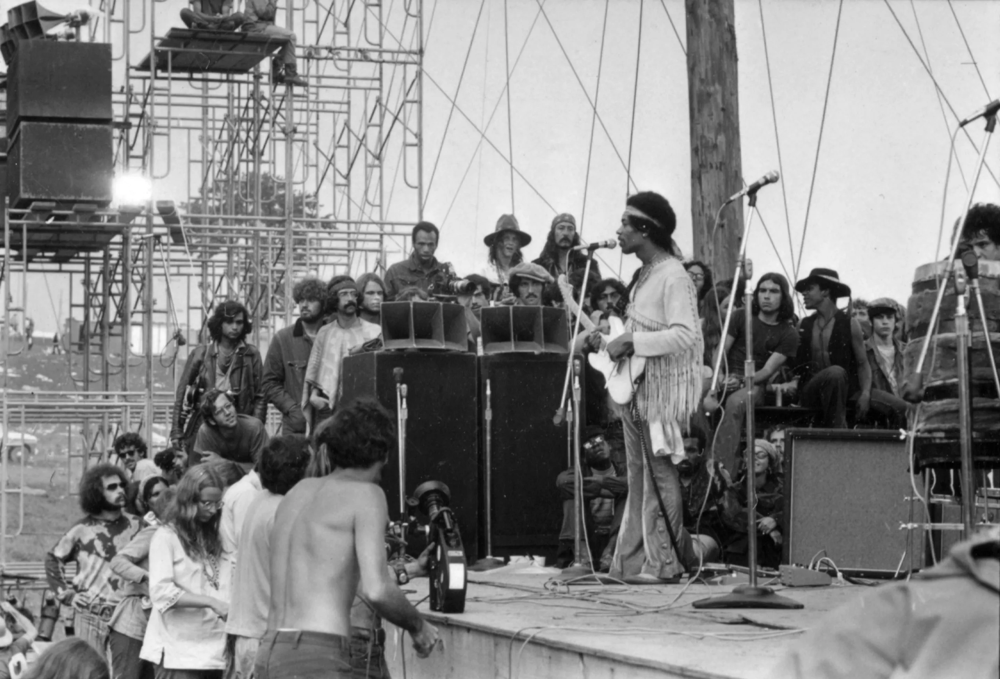
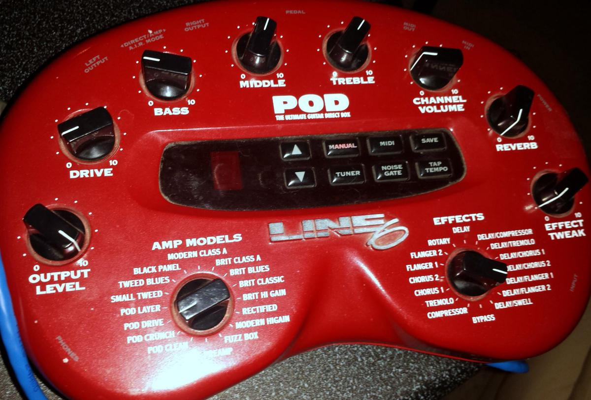

Timeline: The Evolution of the Electric Guitar
- Origins: The Need for Volume (1920s–1930s)
Acoustic guitars struggled to be heard in jazz and big‑band settings. Early inventors experimented with pickups and amplification, setting the stage for engineering innovation driven by musical necessity. - First Breakthrough: The Rickenbacker “Frying Pan” (1931–1932)
The first commercially successful electric guitar, featuring a horseshoe‑style pickup. Marks the beginning of the electric guitar as a real instrument. - The Solid‑Body Revolution (1940s–1950s)
Les Paul’s “Log” and the Fender Broadcaster/Telecaster proved the value of solid bodies. Gibson Les Paul combined craftsmanship with powerful tone, establishing core designs still used today. - Cultural Explosion and Iconic Players (1960s–1980s)
The electric guitar became a symbol of identity, rebellion, and creativity. Iconic players like Jimi Hendrix and Eddie Van Halen redefined what was possible. - Technology Expands the Sound (1960s–present)
Innovations like humbucker pickups, effects pedals, and amplifier evolution opened new creative possibilities. - Modern Era: Customization, Digital Tech, and Cultural Legacy (1990s–present)
Boutique builders, digital modeling, and ongoing cultural relevance keep the electric guitar at the center of music and creativity.
Artifacts: Key Objects in Electric Guitar History

Rickenbacker “Frying Pan” (1931–1932)
The first commercially successful electric guitar. Represents the birth of electric amplification.

Les Paul’s “Log” Prototype (Early 1940s)
A literal 4x4 plank with pickups and hardware attached. Demonstrates the invention of the solid‑body concept.

Early Fender Advertisements (1950s)
Ads and catalogs showing the new “solid‑body electric” concept and the shift toward mass production.

First‑Generation Humbucker Pickup (Gibson PAF, 1957)
The “Patent Applied For” humbucker solved the noise problem of single‑coils and defined the sound of rock, blues, and jazz.

Early Effects Pedals (1960s–1970s)
Iconic pedals like the Fuzz Face and Cry Baby Wah expanded the guitar’s expressive range.

Amplifier Milestones
Classic amps like the Marshall Plexi stack and Fender Bassman shaped the evolution of tone, volume, and distortion.

Cultural Artifact: Hendrix at Woodstock (1969)
A photo from Hendrix’s legendary performance, symbolizing the electric guitar as a cultural and political voice.

Modern Digital Modeling Unit (2000s–present)
Devices like the Line 6 POD and Kemper Profiler represent the shift from analog to digital and the modern era of tone modeling.
About This Museum
This virtual museum is dedicated to the electric guitar’s journey from a volume solution to a symbol of creativity and culture. Explore the timeline, discover artifacts, and celebrate the instrument’s ongoing legacy.